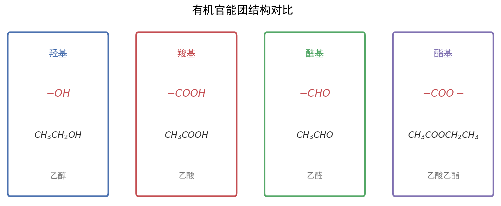

核心内容
关键概念
- 有机反应类型：取代反应、加成反应、消去反应、氧化反应、还原反应、聚合反应（加聚/缩聚）
- 官能团：决定有机物特殊性质的原子或原子团，是推断和合成的基础
- 同分异构体：分子式相同、结构不同的化合物，包括碳链异构、位置异构、官能团异构、立体异构（顺反/对映）
- 有机推断：根据分子式、官能团特征、反应条件、转化关系推断有机物结构
- 合成路线设计：从目标产物逆向分析，选择合适原料和反应步骤，遵循"绿色化学"原则
核心公式/定理
1. 不饱和度（Ω）计算：
Ω = (2C + 2 + N - H - X) / 2
其中C、H、N、X分别为碳、氢、氮、卤素原子数
每1个不饱和度 = 1个双键 或 1个环
每2个不饱和度 = 1个三键 或 1个苯环（苯环Ω=4）
2. 有机推断突破口：
- 分子式信息：结合不饱和度推断可能结构
- 反应条件：浓H₂SO₄/△（酯化/消去）、NaOH/△（水解）、Cu/△（氧化）、H₂/催化剂（加成）
- 特征现象：使溴水褪色（C=C或C≡C）、银镜反应（-CHO）、FeCl₃显色（酚）、Na产生H₂（-OH/-COOH）
- 分子量变化：+16（氧化为醛/酮）、+32（氧化为酸）、+14（增加CH₂）
- 碳骨架变化：碳链增长（增长2个C：醛与格氏试剂；增长1个C：CN水解）
3. 合成路线设计原则：
- 正向分析：原料 → 中间体 → 目标产物
- 逆向分析：目标产物 → 前体 → 原料（常用）
- 保护基策略：引入保护基 → 目标反应 → 脱保护基
- 绿色化学：原子经济性高、步骤少、副产物少、条件温和
适用条件：不饱和度公式适用于仅含C、H、O、N、X的有机物；逆向合成分析适用于复杂分子合成路线设计
注意事项：① 计算不饱和度时O不影响；② 立体异构需考虑手性碳和顺反结构；③ 合成路线中注意官能团兼容性
方法步骤
有机推断题解题步骤
- 读信息：通读全题，标注已知条件（分子式、反应条件、特征现象）
- 算不饱和度：根据分子式计算不饱和度，初步推断是否含双键、三键、苯环
- 找突破口：
- 特征反应条件：浓H₂SO₄/△→酯化或消去；NaOH/△→水解或卤代烃消去；Cu(OH)₂/△→醛基
- 特征现象：银镜反应→醛基；使溴水褪色→C=C/C≡C/酚；FeCl₃显色→酚羟基
- 分子量变化：M增加16→-CH₂OH→-CHO或-CHO→-COOH；M增加14→增加一个CH₂
- 推中间体：从已知物质向未知物质逐步推导，或从目标产物逆向推导
- 验证结构：将推断的结构代入所有条件，检验是否全部满足
同分异构体书写策略
- 碳链异构：
- 主链由长到短，支链由整到散，位置由心到边
- 示例：C₅H₁₂有3种（正戊烷、异戊烷、新戊烷）
- 位置异构：
- 官能团在碳链上位置不同
- 示例：C₃H₇Cl有2种（1-氯丙烷、2-氯丙烷）
- 官能团异构：
- 相同分子式，不同官能团类型
- 常见对应：醇↔醚、醛↔酮、羧酸↔酯、氨基酸↔硝基化合物
- 书写顺序：
- 步骤1：写碳链异构（主链由长到短）
- 步骤2：标位置异构（官能团位置由心到边）
- 步骤3：看官能团异构（换官能团类型）
- 步骤4：检查立体异构（手性碳、顺反异构）
- 限定条件同分异构：
- 能发生银镜反应→含-CHO或HCOO-
- 能与NaHCO₃反应→含-COOH
- 能与FeCl₃显色→含酚羟基
- 能水解→含酯基或卤原子
- 核磁共振氢谱峰数→等效氢种类
有机反应类型总结
| 反应类型 | 定义 | 典型试剂/条件 | 典型官能团变化 | 实例 |
|---|---|---|---|---|
| 取代反应 | 原子/基团被其他原子/基团替代 | 卤素/Fe、浓硝酸/浓硫酸、NaOH/△ | -H→-X、-H→-NO₂、-X→-OH | 苯的溴代、酯化、水解 |
| 加成反应 | 不饱和键断裂，加其他原子/基团 | H₂/催化剂、X₂、HX、H₂O | C=C→C-C、C=O→C-OH | 乙烯加溴、醛加氢 |
| 消去反应 | 脱去小分子形成不饱和键 | 浓H₂SO₄/△、NaOH/醇/△ | -X或-OH→C=C | 乙醇制乙烯、卤代烃消去 |
| 氧化反应 | 加氧或去氢 | O₂/催化剂、Cu/△、KMnO₄ | -OH→-CHO、-CHO→-COOH | 乙醇氧化为乙醛 |
| 还原反应 | 加氢或去氧 | H₂/催化剂、NaBH₄、LiAlH₄ | -CHO→-CH₂OH、-NO₂→-NH₂ | 醛还原为醇 |
| 加聚反应 | 不饱和单体加成聚合 | 催化剂、加热加压 | C=C→链状高分子 | 乙烯→聚乙烯 |
| 缩聚反应 | 单体间脱去小分子聚合 | 催化剂、加热 | -OH+-COOH→酯键 | 对苯二甲酸+乙二醇→涤纶 |
官能团特征反应与检验速查
| 官能团 | 特征反应 | 检验方法 | 现象 |
|---|---|---|---|
| -OH（醇） | 与Na反应、氧化为醛/酮 | 加入Na | 产生无色气体（H₂） |
| -OH（酚） | 与NaOH反应、FeCl₃显色 | 加入FeCl₃溶液 | 显紫色 |
| -CHO | 银镜反应、斐林反应 | 银氨溶液/△ | 产生银镜 |
| -COOH | 酸性、酯化反应 | 加入NaHCO₃ | 产生气泡（CO₂） |
| C=C / C≡C | 加成反应、氧化反应 | 溴水或KMnO₄ | 褪色 |
| -X（卤代烃） | 水解/消去反应 | NaOH/水/△后加HNO₃+AgNO₃ | 生成沉淀（AgCl白/AgBr浅黄/AgI黄） |
| -COOR（酯） | 水解反应 | NaOH/△后酸化 | 分层消失或产生羧酸气味 |
| -NH₂ | 碱性、与酸反应 | 加入HCl | 溶解 |
合成路线设计常用策略
1. 碳链增长：
- 醛 + HCN → 氰醇 → 水解得α-羟基酸（增长1C）
- 格氏试剂法：R-MgX + R'CHO → 增长R'基团（增长2C以上）
- 羟醛缩合：2RCHO → β-羟基醛 → α,β-不饱和醛（增长2C）
2. 碳链缩短：
- 烯烃臭氧氧化：RCH=CHR' → RCHO + R'CHO
- 羧酸脱羧：R-COONa + NaOH/CaO → RH + Na₂CO₃
- 卤仿反应：CH₃-CO-R + X₂/NaOH → RCOOH + CHX₃（缩短1C）
3. 官能团引入：
- 引入-OH：烯烃水化、卤代烃水解、醛还原、酯水解
- 引入-CHO：醇氧化、烯烃氧化（O₃/Zn）、端炔水化
- 引入-COOH：醛氧化、酯水解、腈水解、苯同系物氧化
- 引入C=C：卤代烃消去、醇消去、炔烃部分加氢
4. 官能团保护：
- 酚-OH保护：与CH₃I/碱反应成醚，后用HI脱保护
- 醛基保护：与醇反应成缩醛，后用酸水解脱保护
- 氨基保护：与酸酐反应成酰胺，后水解
5. 逆向合成分析（ retrosynthesis ）：
- 目标分子 → 前体（切断C-C键或C-杂键）
- 常用切断：C-C键在官能团α位、β位或γ位切断
记忆口诀/技巧
有机推断突破口口诀："分子式算不饱和度，反应条件定类型，特征现象定官团，分子量变化定转化，前后联系定结构"
同分异构书写口诀："碳链由长至短，支链由整到散，位置由心到边，官能团异构莫忘"
合成路线设计口诀："目标产物倒着推，前体切断找对应，正向验证通不通，绿色化学记心中"
题型识别标志
看到什么条件 → 立刻想到什么方法/模型
| 题干关键条件 | 识别为 | 首选方法 |
|---|---|---|
| "以化合物 I 为原料合成..." | 有机合成路线 | 逆合成分析 + 官能团转化 |
| "分子式/不饱和度" | 结构推断起点 | Ω=(2C+2+N−H−X)/2 |
| "反应条件：浓H₂SO₄/△、NaOH/△、Cu/△" | 反应类型判断 | 酯化/消去、水解、氧化 |
| "同分异构体含某结构、NMR 一组峰" | 限制条件同分异构 | 先定官能团再排碳链 |
| "原子利用率 100%" | 加成反应 | 无副产物，如加成、加聚 |
| "合成路线：(不用注明条件)" | 路线设计 | 正向/逆向，注意官能团兼容 |
解题路径（有机推断与合成五步法）
第一步：读信息，算不饱和度
- 由分子式算 Ω，初判双键/三键/苯环
第二步：找突破口（条件+现象）
- 浓H₂SO₄/△→酯化或消去；NaOH/△→水解；Cu/△→醇氧化；银氨→醛
第三步：推中间体结构
- 顺推+逆推结合；注意碳链增减(格氏、氰基水解)
第四步：解同分异构
- 限制条件定位官能团；NMR 组数 = 等效氢种数
第五步：设计合成路线
- 逆合成切断；注意保护基与绿色原子经济
母题（2022 广东选择性考试·第21题，14分）
广东卷有机合成大题，以生物质资源为背景，覆盖分子式、反应类型、性质、原子经济性。
题目：基于生物质资源开发常见化工原料是绿色化学重要方向。以化合物 I 为原料，可合成丙烯酸 V、丙醇 VII 等，进而制备聚丙烯酸丙酯类高分子材料。 (1) 化合物 I 的分子式为 ______，其环上的取代基是 ______（写名称）。 (2) 已知化合物 II 也能以 II′ 形式存在。根据 II′ 结构特征，分析预测其化学性质，完成下表：
| 序号 | 结构特征 | 可反应试剂 | 反应形成新结构 | 反应类型 |
|---|---|---|---|---|
| ① | −CH=CH− | H₂ | −CH₂−CH₂− | 加成反应 |
| ② | _____ | _____ | _____ | 氧化反应 |
| ③ | _____ | _____ | _____ | _____ |
(3) 化合物 IV 能溶于水，其原因是 ______。 (4) 化合物 IV 到 V 的反应是原子利用率 100% 的反应，且 1 mol IV 与 1 mol a 反应得到 2 mol V，则化合物 a 为 ______。 (5) 化合物 VI 有多种同分异构体，其中含 结构的有 ______ 种，核磁共振氢谱图上只有一组峰的结构简式为 ______。
解：
- (1) 由 I 结构简式得分子式 C₅H₄O₂；环上取代基为 醛基(−CHO)
- (2) ② II′ 含 −CHO，可被 O₂ 氧化为 −COOH；③ 含 −COOH，与 CH₃OH 酯化得 −COOCH₃
- (3) IV 含羟基，能与水分子形成分子间氢键 → 易溶于水
- (4) IV→V 原子利用率 100% 且 1:1 生成 2 V，推得 a 分子式 C₂H₄，即 乙烯
- (5) 含 结构的同分异构共 2 种；NMR 仅一组峰的为 (CH₃)₂C=O（丙酮）
→ ②：−CHO / O₂ / −COOH / 氧化反应；③：−COOH / CH₃OH / −COOCH₃ / 酯化反应(取代反应)
💡 关键技巧：原子利用率 100% ⟺ 化合反应(无副产物)；由"1 mol IV + 1 mol a → 2 mol V"反推 a 是最简突破口。第(6)小问"以含二羧基化合物为唯一含氧原料制备 VIII 单体"的标准合成路线详见真题官方答案（本文不臆造具体路线）。
关联卡片
- 有机化学官能团性质 — 官能团性质是推断和合成的基础，需熟练掌握
- 结构化学基础 — 碳原子杂化类型（sp、sp²、sp³）与有机物空间构型、共面共线分析
- 化学反应速率与化学平衡 — 有机反应中的催化剂选择、温度控制等反应条件优化
备注
- 广东卷有机题特色：
- 情境化：常以药物合成（如抗病毒药物、抗生素）、高分子材料（如可降解塑料）、天然产物提取为背景
- 绿色化学：考查原子经济性、催化剂选择、副产物处理、循环利用
- 结合实验：有时要求设计实验验证产物结构或纯度
- 易错警示：
- 消去反应条件混淆：醇消去用浓H₂SO₄/△，卤代烃消去用NaOH/醇/△，水解用NaOH/水/△
- 氧化程度混淆：醇→醛（氧化1步）→羧酸（再氧化1步），但伯醇和仲醇氧化产物不同
- 苯环上的定位效应：活化基团（-OH、-NH₂、-R）使亲电取代在邻对位；钝化基团（-NO₂、-COOH）在间位
- 同分异构体漏写：特别是酯类同分异构（R-COO-R'），需要考虑R和R'的不同组合
- 手性碳判断：连接4个不同基团的碳原子为手性碳，存在对映异构
- 核磁共振氢谱（¹H NMR）：
- 峰数 = 等效氢种类数
- 峰面积比 = 等效氢原子数之比
- 裂分情况：n+1规律（相邻碳上有n个氢则裂分为n+1重峰）
- 广东卷常结合NMR信息推断有机物结构，需注意化学位移范围（如醛基H在9-10 ppm）
- 与工艺流程关联：广东工艺流程题中常涉及有机物的分离提纯（如萃取、蒸馏、结晶），需结合有机物物理性质（沸点、溶解性）分析
- 等级赋分提示：有机推断题是广东化学卷压轴题（12-15分），通常设5-6小问，前3问（官能团名称、反应类型、结构简式）是赋分"基本盘"，后几问（同分异构体、合成路线设计）是"拉分点"，确保基础分不丢是等级赋分B以上的关键